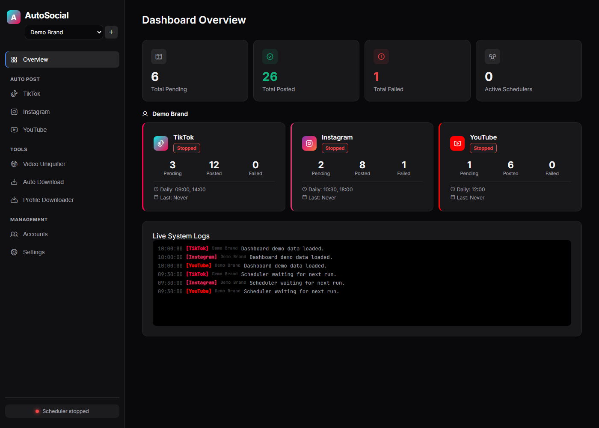

Separate accounts
Each brand gets its own queue folders and Playwright profile for TikTok, Instagram, and YouTube.
AutoSocial Studio keeps TikTok, Instagram, and YouTube queues, schedules, and browser sessions on your own machine. This page is the public project site. The dashboard itself runs locally, because it needs Node, Playwright, and files on disk.

Each brand gets its own queue folders and Playwright profile for TikTok, Instagram, and YouTube.
Post once, or run cron and daily times from the dashboard. Schedulers stay off until you start them.
Logins stay in .profiles/ on the workstation. The dashboard binds to localhost and has no accounts of its own.
git clone https://github.com/willi220p-star/AutoSocial.git cd AutoSocial npm ci npx playwright install chromium cp .env.example .env npm run dashboard